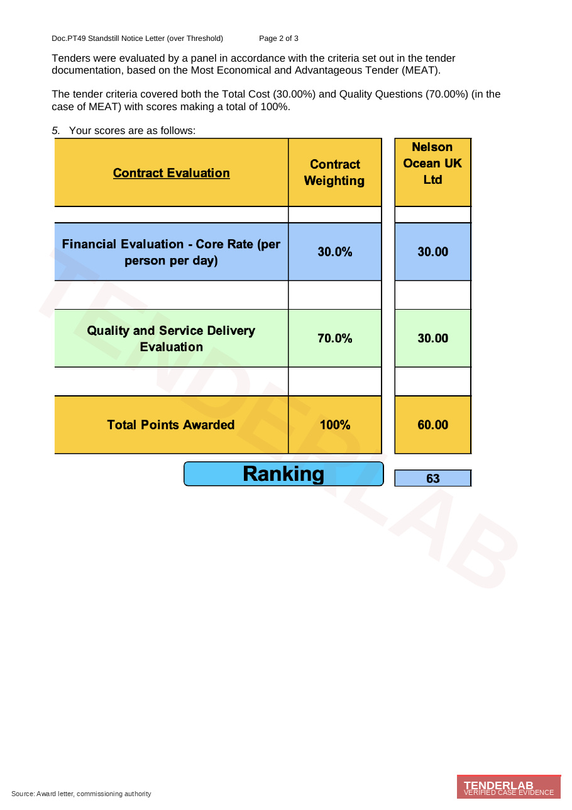
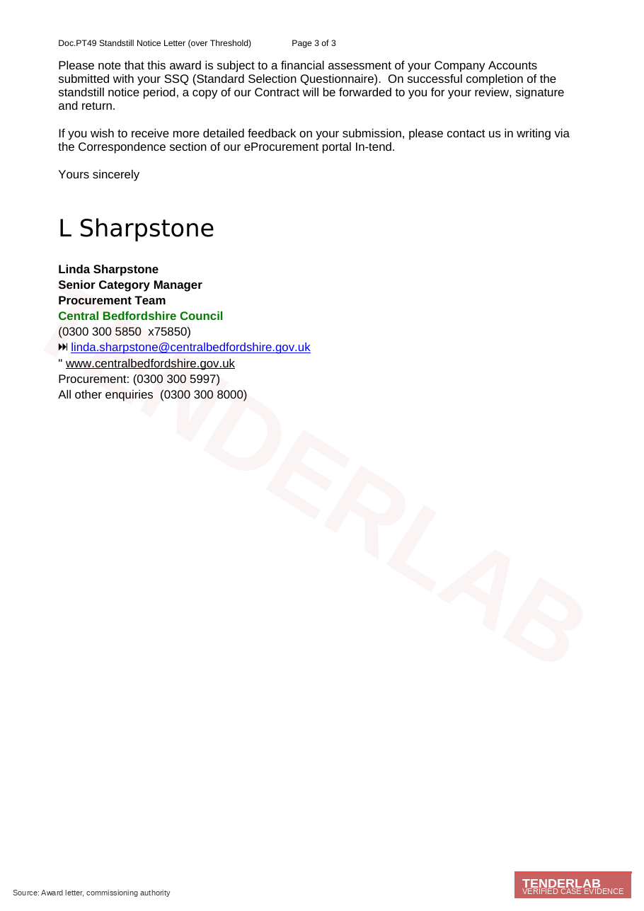

Central Bedfordshire Supported Living, Mental Health, Learning Disabilities and Autism, Physical Disabilities 2024: Provider Qualification Analysis (Lot 1, Variable Day Hours)
Click to view award letter
The Award Letter
Verified Source


Section 01Case title
This case study examines the route Nelson Ocean UK Ltd took onto Central Bedfordshire Council's Supported Living incorporating Mental Health, Learning Disabilities and Autism, and Physical Disabilities procurement, where the provider secured Lot 1 Standard Supported Living with Variable Day Hours. The procurement carried reference CBC-1684-FA-LS, was run by the Council's Procurement Team, and was issued under Public Procurement Contract Regulations 2015 Regulation 86. The Standstill Notice Letter reached the provider on 16 December 2024.
Section 02Organisation type and service setting
The Contracting Authority is Central Bedfordshire Council, a unitary authority commissioning supported living and complex needs services through its Procurement Team. The award notice was issued under PCR 2015 Regulation 86, with standstill of ten days from electronic notice, or fifteen days from a posted notice, ending at midnight on 2 January 2025.
The setting is supported living delivered with variable day hours across Central Bedfordshire, covering single tenancy and shared accommodation supported living. Lot 1 covers the Standard cohort tier within the Council's wider supported living framework, with variable day hours as the operationally distinctive feature. The cohort scope across Lot 1 includes adults with mental health needs (including dual diagnosis and forensic step-down), adults with learning disability (including profound and multiple learning disability), adults with autism spectrum conditions including high sensory and behavioural acuity, adults with physical disabilities requiring waking-night and structured day support, and adults with co-occurring conditions requiring multi-disciplinary input.
Section 03Client profile at entry
Nelson Ocean UK Ltd is a multi-cohort supported living provider based in Milton Keynes, with operational experience across mental health, learning disability, autism and physical disability cohorts and a route into Central Bedfordshire as a strategic adjacent commissioning area. The provider operates from Suite 22, Milton Keynes Business Centre, Foxhunter Drive, Linford Wood, with the bid contact named on the award letter as Shumi Miskowicz, Director and Registered Manager.
The internal bid function had not yet built a variable-day-hours operational narrative as a standalone capability statement, even though the underlying staffing model already supported it on the ground. MEAT-weighted procurements at 30 percent cost and 70 percent quality reward dense quality narrative anchored to the lot's operationally distinctive features, and a generic supported living narrative on a MEAT-weighted lot collapses to a floor score, even with strong commercial pricing.
Section 04Starting gaps and limitations
Three gaps were live at the start. The variable day hours requirement had not been treated as the operationally distinctive feature of the lot, and it was sitting inside the staffing answer as one element among several rather than at the front of the response as the lot's defining capability. Cohort content tended to merge across the four cohorts rather than naming clinical and behavioural pathways for each, and multi-cohort answers on supported living lots routinely fail because the panel cannot find cohort-specific evidence on first read. The MEAT scoring weighting (30 percent total cost and 70 percent quality) had not been mapped onto a paragraph-level allocation of evidence weight inside the response, and quality at 70 percent demands the densest evidence sit against the most heavily weighted criteria.
Section 05Trigger for engagement
The provider needed Lot 1 Standard Supported Living with Variable Day Hours to enter the Council's commissioned supported living provision and to access referrals across a four-year contract term with a two-year extension option. The brief was clear: write a multi-cohort lot in a way that the Central Bedfordshire panel would recognise as a credible variable-day-hours operation rather than as a generic supported living service with four cohort badges.
Section 06Risk position at the outset
The risk was a multi-cohort answer that read as a single supported living service with four cohort badges rather than as a variable-day-hours operation with cohort-specific pathways. That outcome would have produced an eligible submission that scored at the floor of the quality weighting, which on a 70 percent quality framework produces a result heavily exposed to commercial pressure. Below the headline risk, PCR 2015 Regulation 86 standstill challenge exposure ran during the ten-day window, so the submission had to be defensible on its face by the close of standstill, with the financial assessment of Company Accounts (submitted with the SSQ) clearing without further query.
Section 07Constraints
The provider was working to MEAT scoring at 30 percent cost and 70 percent quality, with a Standard Selection Questionnaire financial assessment of Company Accounts running post-award and standstill of ten days from electronic notice or fifteen days from posted notice. The contract start was set for 1 April 2025 with an initial term of 4 years and an extension option of up to a further 2 years. The submission window did not allow for re-engineering operational arrangements; it required surfacing the existing operation as evidence.
Section 08Our role and level of involvement
We took the engagement as end-to-end on technical and quality. We owned the cohort-specific narrative across mental health, learning disability, autism and physical disabilities, the variable day hours staffing model, and the standstill compliance lead through to award notification. The provider supplied operational facts, including keyworker structure, positive behavioural support plans, recovery-focused mental health pathways, autism-informed sensory environments and named multi-disciplinary review cycles.
Section 09Stabilisation actions
Three stabilisation actions ran first. Variable day hours was moved to the front of the response, framed in the opening paragraph as the framing capability rather than as a staffing footnote, with documented escalation triggers, named coordination roles and shift planning aligned to person-centred outcomes. The four cohorts were separated into named clinical and behavioural pathways with cohort-specific operational anchors, with mental health leading on recovery focus and dual diagnosis pathways, learning disability leading on positive behavioural support plans and structured day support, autism leading on sensory awareness and trauma-informed practice, and physical disability leading on moving and handling competence and waking-night cover. The 70 percent quality weighting was mapped onto a paragraph-level evidence allocation, with the densest evidence sitting against the most heavily weighted criteria.
Section 10Approach to building capability
The submission described a flexible support model based on need-led day hour banding, with documented escalation triggers, named roles for variable hour coordination, and shift planning aligned to person-centred outcomes. The four cohorts were addressed in parallel with named clinical and behavioural pathways, and the financial position aligned to the MEAT 30 percent cost weighting without breach. The opening paragraph framed variable day hours as the lot's defining capability rather than as a staffing footnote, with the named coordination role, the escalation triggers and the person-centred outcome alignment placed where the evaluator could find them on first read.
Section 11How delivery was executed in practice
The submission described variable day hours supported living delivered through registered manager and team leader oversight, named keyworker structure, positive behavioural support plans, recovery-focused mental health pathways, autism-informed sensory environments, multi-disciplinary review cycles and structured monthly outcomes reporting. The narrative did not over-claim, with each operational paragraph anchored to a verifiable system or named role, and the financial submission aligned to the MEAT 30 percent cost weighting with the SSQ financial assessment cleared post-award.
Section 12Key interventions that changed trajectory
Three interventions did the work, and each is repeatable on any multi-cohort supported living lot. Variable day hours was led on the front foot rather than buried inside the staffing answer, with the lot's operationally distinctive feature framed in the opening paragraph as the framing capability. Each cohort received a named clinical or behavioural pathway rather than a shared paragraph, which protected the cohort signal across all four groups. The financial submission was triple-checked against the MEAT 30 percent cost weighting, with pricing inside the published commercial floor and aligned to the Real Living Wage compliance expectation that recurs across Bedfordshire commissioning.
Section 13Outcome achieved
Lot 1 Standard Supported Living with Variable Day Hours was awarded. The contract starts on 1 April 2025 for an initial 4-year term, with an option to extend for up to a further 2 years. The standstill closed at midnight on 2 January 2025, the SSQ financial assessment of Company Accounts cleared post-award, and the contract was issued for review, signature and return through the Council's protocol.
Working from a similar starting point?
Free consultation on your next tender. We will read the specification, identify the deterministic and discretionary points, and tell you whether the win is realistic.
Section 14Measurable uplift
| Element | Result |
|---|---|
| Lot awarded | Lot 1 Standard, Variable Day Hours |
| Contract reference | CBC-1684-FA-LS |
| Contract start | 1 April 2025 |
| Contract term | 4 years + 2 year extension option |
| Standstill end | Midnight 2 January 2025 |
| Award route | MEAT, PCR 2015 Reg 86 |
Section 15Before and after position
The provider was not on Central Bedfordshire Council's commissioned supported living contract and had no structured route to receive Council referrals across mental health, learning disability, autism and physical disability cohorts within the variable day hours setting. The multi-cohort narrative had not yet been differentiated by named pathway.
The provider holds Lot 1 Standard Supported Living with Variable Day Hours for an initial four years with a two-year extension option, operational from 1 April 2025. There is direct referral access for adults across four major cohort groups within the Central Bedfordshire footprint, and variable day hours is now framed as a front-of-response capability statement.
Section 16Client confidence and capability post-engagement
The provider now holds a cohort-by-cohort pathway template and a variable day hours staffing matrix that can be reused on adjacent multi-cohort supported living procurements. The shift in confidence moved from one-off bid writing to a structural understanding of how MEAT weighting maps onto paragraph-level evidence allocation, and the internal team can now read a multi-cohort supported living lot and identify the operationally distinctive feature on first reading. The four-cohort separation discipline carries across every multi-cohort submission rather than just the one that produced this contract.
Section 17Client feedback
Linda Sharpstone, Senior Category Manager, Procurement Team, Central Bedfordshire Council. Standstill Notice Letter dated 16 December 2024.
Section 18Repeat or ongoing work
The contract runs from 1 April 2025 with a 2-year extension option. The cohort pathway template and variable day hours staffing matrix feed adjacent supported living procurements where similar multi-cohort architectures apply, and the provider has retained ongoing tender support across Bedfordshire, Buckinghamshire and the wider Milton Keynes commissioning footprint. The front-of-response capability framing discipline is now embedded across every multi-cohort submission.
Section 19Similar scenarios this applies to
The pattern recurs across multi-cohort supported living lots, MEAT-weighted procurements with quality dominance, and frameworks where Real Living Wage compliance and named cohort pathways drive the evaluation panel's score.
- Multi-cohort supported living contracts with mental health, learning disability, autism and physical disability scope.
- MEAT-scored procurements weighted 30 percent cost and 70 percent quality.
- Lots requiring variable day hours staffing models.
- Tenders under PCR 2015 Regulation 86 over-threshold standstill.
- Long-term contracts of four years with extension options requiring documented operational stability evidence.
- Procurements with SSQ financial assessment requirements post-award.
Section 20Outcome summary
Central Bedfordshire Council Lot 1 Standard Supported Living with Variable Day Hours secured for Nelson Ocean UK Ltd, with a four-year contract from 1 April 2025 and a two-year extension option. The multi-cohort scope spans mental health, learning disability, autism and physical disability, and the provider's bid practice now leads with the operationally distinctive feature rather than with a generic supported living narrative, with cohort separation embedded as standard practice across the bid function.